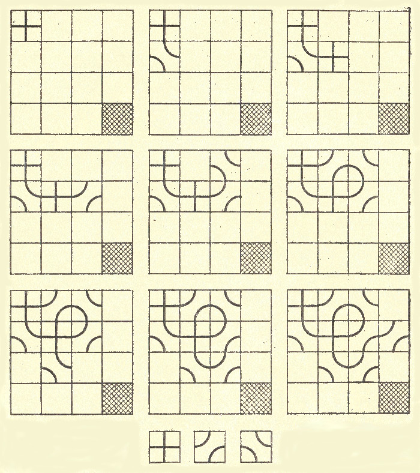

В последнее время появились топологические игры, в которых противники рисуют кривые, извивающиеся по всей доске. Гекс, бридж-ит, игра Гейла — вот лишь некоторые из игр такого рода, появившихся на прилавках американских магазинов за последние тридцать лет. В 1960 году Уильям Л. Блэк, будучи студентом Массачусетского технологического института, занялся исследованием гекса и бридж-ит, в результате чего появилась новая топологическая игра, которую друзья изобретателя назвали в его честь «блэк».

Рис.1 Топологическая игра блэк
Для этой игры можно, конечно, изготовить набор отдельных разрисованных квадратиков, однако на бумаге ю клетку играть в нее ничуть не хуже. Размеры доски совершенно произвольны; лучше всего, пожалуй, стандартная доска 8x8, но для объяснения правил удобнее выбрать игровое поле размером 4x4. После того как поле будет готово, один из противников открывает игру, поставив крест в клетке, расположенной в левом верхнем углу, как показано на рис.1. Второй игрок должен подстроить к этому кресту продолжение, нарисовав в любой соседней клетке одну из трех фигур, показанных в нижней части рис.1. Каждая из них образована двумя линиями. Одна линия составляет продолжение уже нарисованной на доске фигуры, вторая соединяет те стороны квадратика, которые не пересекаются с первой линией.
Игроки делают ходы по очереди. Каждым ходом надо продолжить кривую на одну из соседних клеток, стараясь при этом, чтобы кривая не пересеклась с границей игрового поля. Тот, кто будет вынужден пересечь границу, терпит поражение. Игрок одерживает победу в том случае, если ему удастся довести кривую до заштрихованной клетки в правом нижнем углу. На рис.1 показана типичная схема игры на уменьшенной доске. Загнав противника в правый верхний угол, первый игрок одерживает победу, потому что независимо от выбора продолжения кривая должна пересечься с границей доски. (Заметьте, что у креста продолжением кривой является лишь один из образующих его отрезков, но в результате последующих ходов второй отрезок также может стать частью кривой.)
Игра в блэк представляет особый интерес в связи с тем, что вскоре после ее появления приятель и соученик Блэка Элвин Р. Берлкэмп обнаружил стратегию, гарантирующую победу одному из игроков. Эта стратегия применима к прямоугольным полям любых размеров с произвольным соотношением сторон. Узназ правильную стратегию, вы тотчас потеряете всякий интерес к игре, поэтому я немного повременю с ее объяснением. Попытайтесь самостоятельно додуматься до блестящего открытия Берлкэмпа.